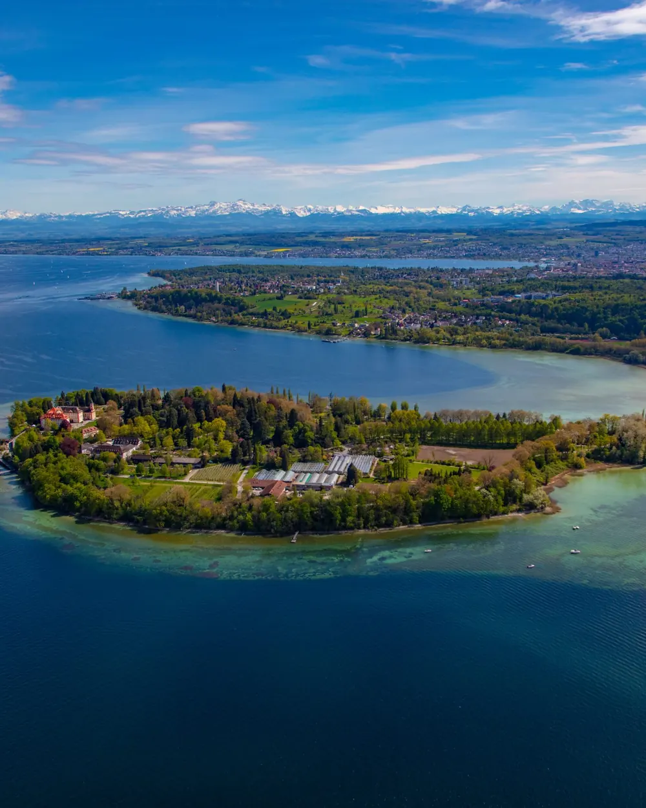
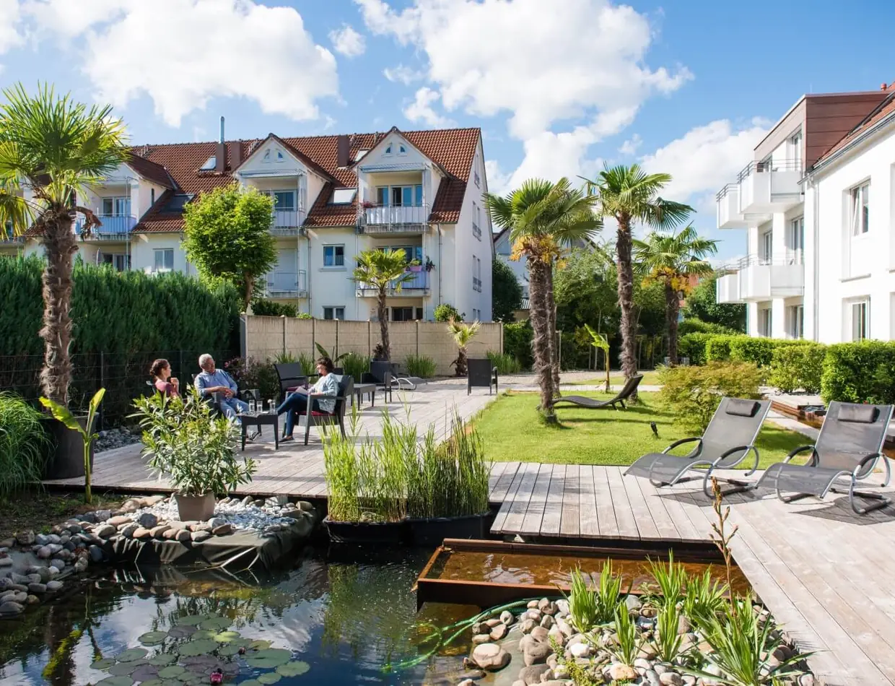
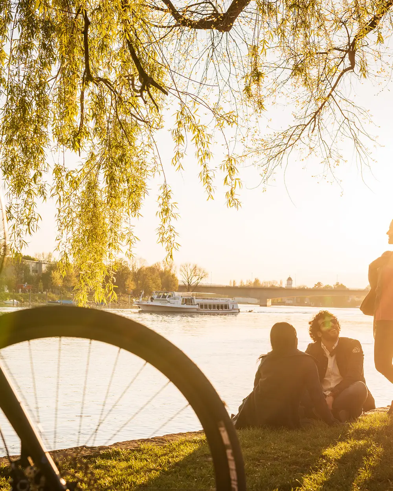
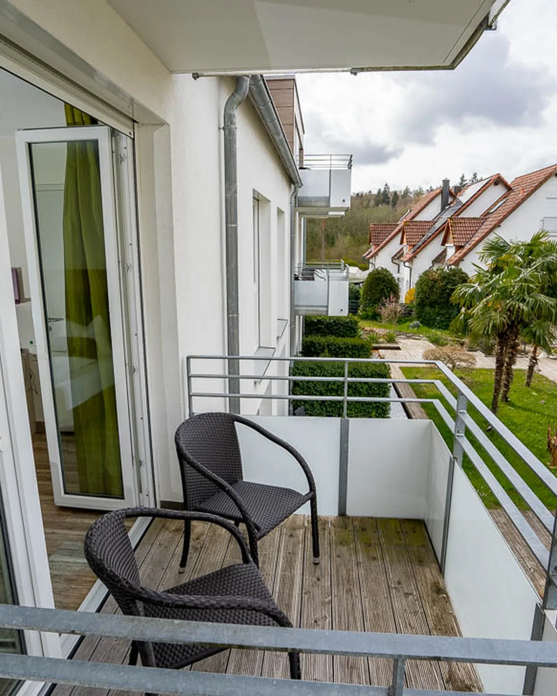
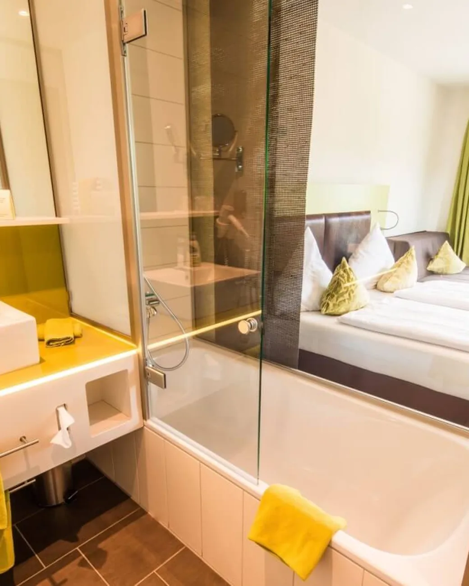
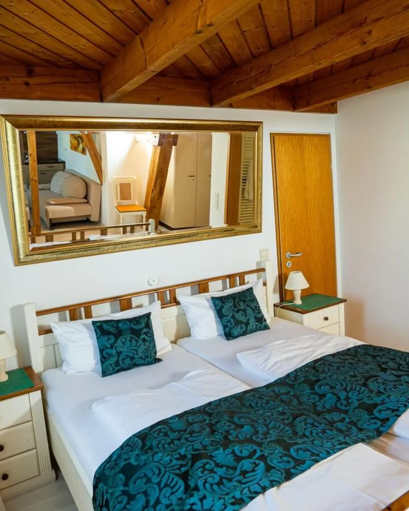
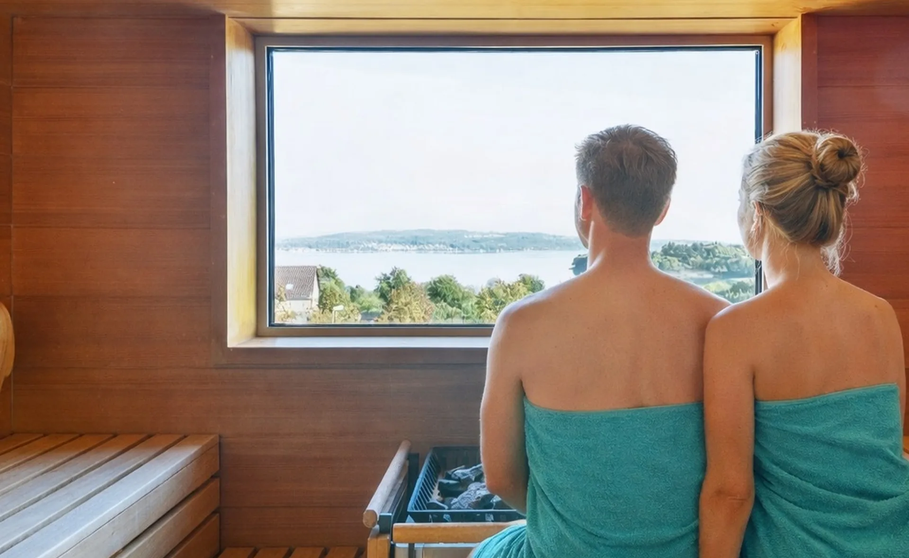
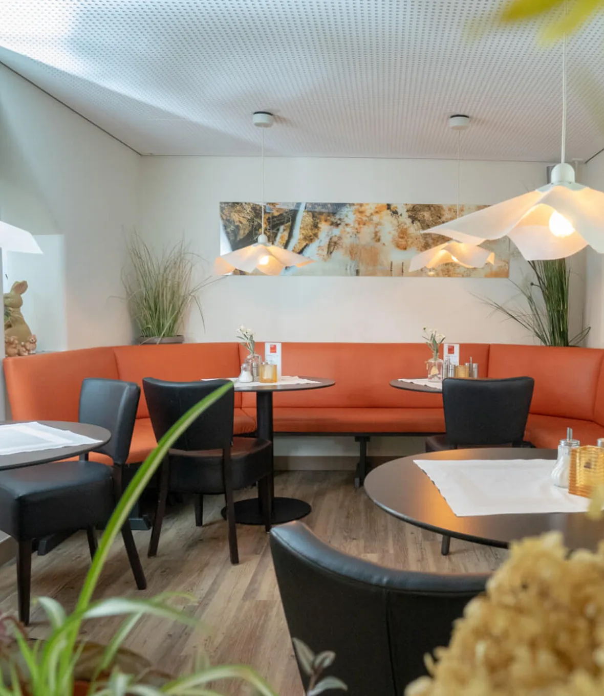
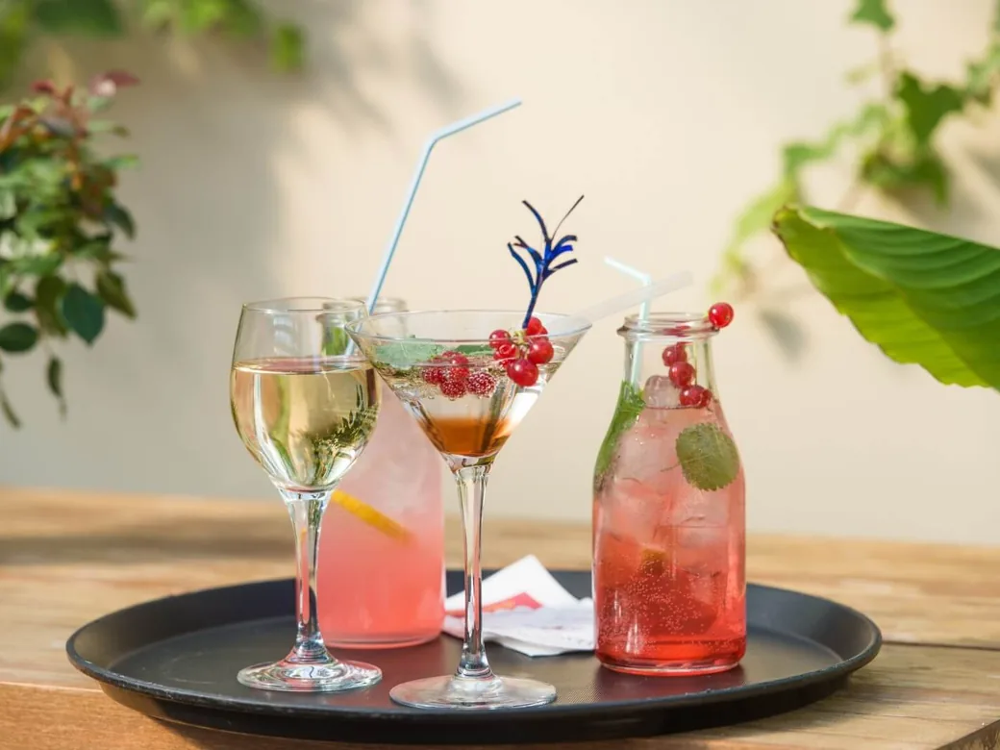

01 · Wenige Gehminuten
Die Insel Mainau.
Die Blumeninsel liegt in bequemer Gehweite über den Uferweg. Im Winter leuchtet dort der Christmas Garden.
Hotel Volapük
Eine Arbeitsprobe von Hotelfreunde, nicht öffentlich gedacht. Mit Passwort weiter.
Das war leider nicht das richtige Passwort.
Ihr Hotel im Grünen, direkt an der Insel Mainau
Ein Familienbetrieb mit Herz über dem Überlinger See. Nah an Konstanz, nah an der Mainau und trotzdem mitten im Ruhigen.
Hotel Volapük
„Volapük“ ist der Name einer Plansprache, die Johann Martin Schleyer um 1879 veröffentlichte. Er war damals Pfarrer in Litzelstetten und entwickelte seine Idee einer Weltsprache nur wenige Schritte von unserem Haus entfernt (Vola heißt Welt, Pük heißt Sprache). Bei uns wohnen heute Kulturentdecker, Radfahrmeister und Entspannungsprofis, ob Businessreise, romantische Auszeit oder Familienurlaub.
1879

„Vola heißt Welt, Pük heißt Sprache. Erdacht ein paar Schritte von hier.“
Konstanz & Bodensee
Zwischen Mainau, Altstadt und Seeufer liegt genug für eine ganze Woche. Zu Fuß, mit dem Rad oder mit dem Schiff.

Die Blumeninsel liegt in bequemer Gehweite über den Uferweg. Im Winter leuchtet dort der Christmas Garden.
Konzil, Hafen und die Imperia, dazu Gassen voller Cafés und die kurze Fähre hinüber nach Meersburg.

Einmal um den Überlinger See oder hinüber in die Schweiz. Die Räder stehen bei uns trocken.
Zimmer & Preise
Vom Einzelzimmer bis zum Familienzimmer über zwei Räume. Alle Zimmer mit Dusche, WC, WLAN und Kabelfernsehen, die Nutzung des Saunabereichs ist für Hausgäste immer inklusive.




Panorama-Saunabereich im Dachgeschoss · für Hausgäste inklusive


Restaurant Litzel's
Der Tag beginnt am ausgewogenen Frühstücksbuffet und kann abends im Litzel's weitergehen, im hellen Wintergarten oder draußen auf der großen Terrasse in der Sonne.
Unser Versprechen
„Ein Hotel mit freundschaftlich gelassener Atmosphäre. Bei uns müssen Sie nichts, außer sich wohlfühlen.“Familie und Team im Hotel Volapük
Diese Konzeptseite zeigt, wie eine Direktanfrage beim Hotel Volapük aussehen würde. Schneller als jedes Portal und ohne Provision dazwischen.